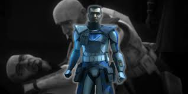

Life Story of Fives
Kamino Training
Fives began his journey as a cadet in Domino Squad, training on Kamino to become a clone trooper. His squads name was Domino Squad and early on they struggled with teamwork and coordination, but eventually they passes their training exam and became official clone troopers.
Rishi Moon
Fives and Echo defended the Rishi outpost from a Separatist attack with the rest of Domino squad. Living as the only survivers of their squad, they proved their bravery and Captain Rex invited them to join the 501st legion.
Defending Kamino
Fives fought valiantly during the Separatist invasion of Kamino, he and Echo protected the clone production facilities against all odds and earned ARC Trooper status.
Citadel
Fives joined a rescue mission to the Citadel with Echo. The treacherous mission tragically took Echo's life in front of Fives and he narrowly escaped death himself. Losing his best friend took a heavy toll on him.
Umbara
With the help of Tup and Jesse, two fellow clones, Fives uncovered General Krell’s betrayal during the Umbara campaign, helping expose corruption within the Republic and save the Umbaran campaign from utter disaster.
Order 66
After his new friend Tup mysteriously killed a Jedi in cold blood, Fives investigated what happened to his friend and discovered inhibiter chips within Tup and every clone in the army that could control them to do whatever someone wanted. After a confrontation with Palpatine where he reveals to Fives his entire grand plan, Fives escapes and tries to warn the Jedi.Tragically, Fives was killed by a fellow clone before he could prevent the fall of the Jedi.